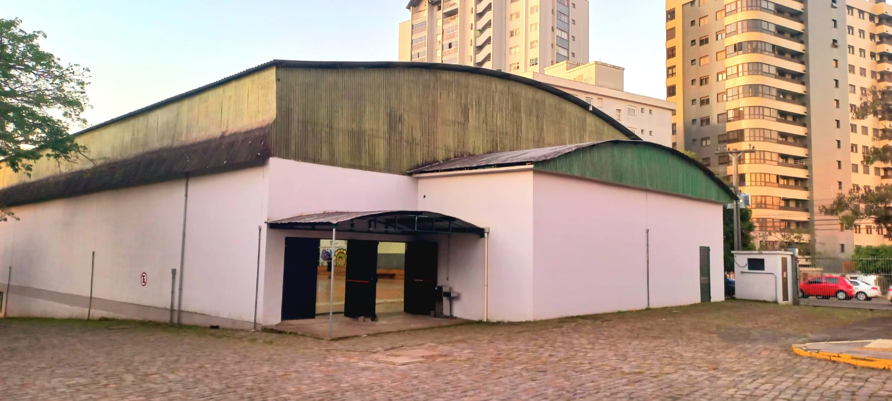

Em resumo, o ginásio do IFRS Campus Bento Gonçalves é um importante espaço de integração, lazer, cultura e esporte, que contribui para a formação integral dos estudantes e para a promoção do bem-estar e qualidade de vida de toda a comunidade do campus.